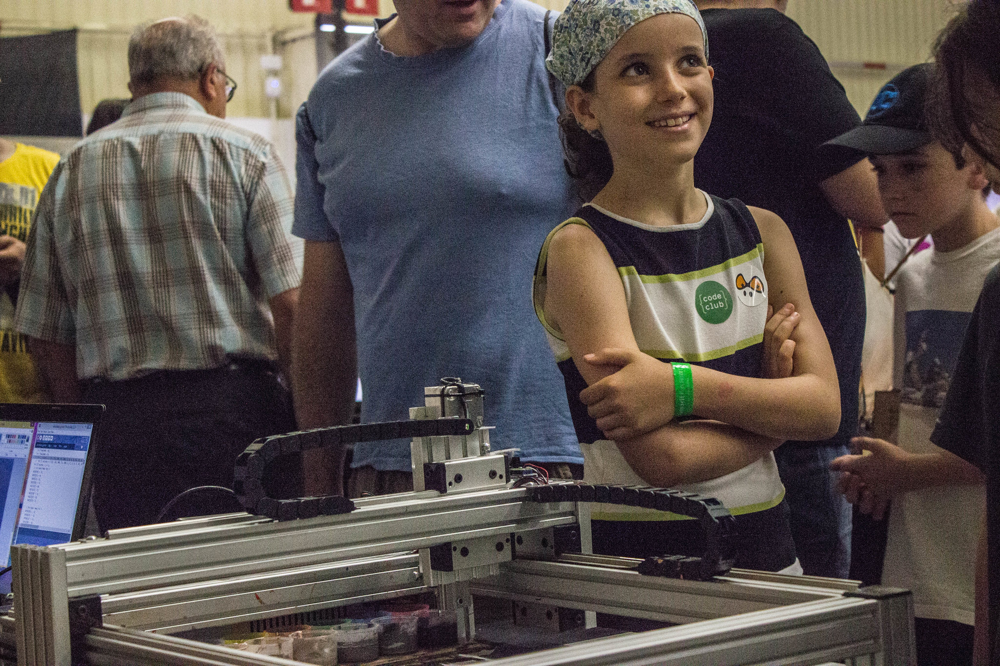
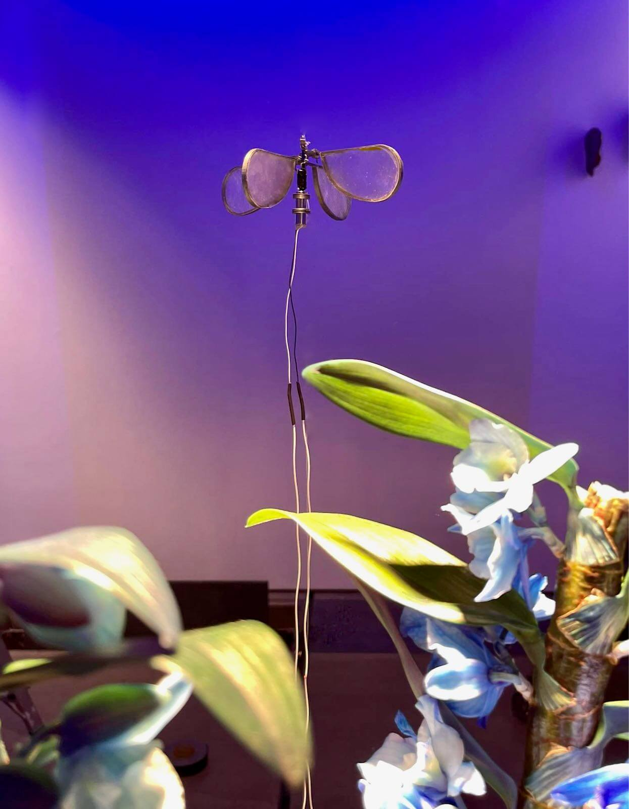

liquid
we move with intention—
shaping ourselves to any idea
curiosity
sparks everything we do
It drives us to explore, connect, and transform across disciplines.
It is what unites us, leading us to flow between different disciplines throughout our individual careers
collective experimentation
lab where ideas flow—
where technology becomes a catalyst for emotion, not an end in itselfadaptability
We embrace the fluid nature of liquid—effortlessly adapting to diverse formats and disciplines.


experiment, create & learn
Experiment
Concept Development & Technical Research
In the initial phase of a project, we generate creative ideas while considering the message to be communicated. We explore and experiment with technologies that can enhance the concept and create greater impact
Create & Learn
Prototyping & Software development
We develop and prototype using different media. Constant learning is part of our process, allowing us to select the tools that best fit each project.
 

Share
Knowledge exchanges
We design and facilitate knowledge-sharing spaces, adapting the format to the themes and audiences we engage with. These exchanges are also part of our research process, helping us question and refine our practice.
research & artistic work
Research
Artistic practice
At the heart of our work is research into technology as a catalyst for emotions. We use digital media to amplify experiences, creating lasting impressions on those who engage with them.